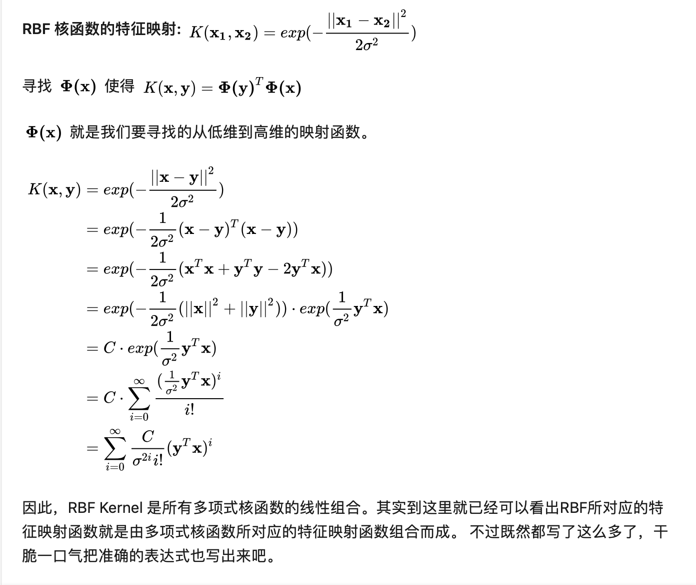
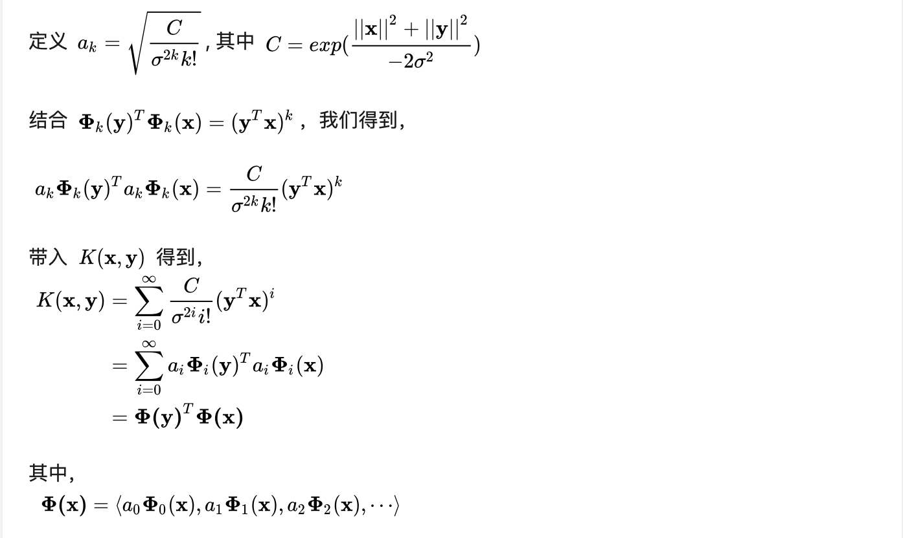

Kernel Method 不是对特征做低维空间到高维空间的映射，只是用来计算映射到高维空间之后的内积的一种简便方法。
我们如果想对原本线性不可分的数据集进行分割，一般有两种方法:
- Soft Margin
- 对Input Space做Feature Expansion，把数据集映射到高维中去，形成了Feature Space。 我们几乎可以认为（We are safe but not certain）原本在低维中线性不可分的数据集在足够高的维度中存在线性可分的超平面。
对于2，我们所做的就是要在Feature Space套用原本在线性可分情况下的Input Space中使用过的优化方法，来找到那个Maximaizing Margin的超平面。原理机制一模一样，是二次规划，唯一不同是代入数据的不同，我们需要代入\(\phi(x)\)而不是\(x\)。这时（在假设我们已知了如何选取mapping之后）才有了Kernel Method的概念。
Kernel Trick的意义，是简化计算二次规划中间的内积计算。因为中间步骤有一步必须求得\(\phi(x\_i)^{T}\phi(x\_j)\)，而我们可以定义核函数\(K(x\_i,x\_j)=\phi(x\_i)^{T}\phi(x\_j)\)，使得我们在不需要显式计算每一个\(\phi(x\_i)\)、甚至不需要知道\(\phi(\cdot )\)长什么样的情况下，直接求出\(\phi(x\_i)^{T}\phi(x\_j)\)的值来。
也就是说，核函数、内积、相似度这三个词是等价的。因为inner product其实就是一种similarity的度量。核函数和映射是无关的。
一句话概括的话，核函数等于映射至高维空间后的高维特征的点积，目的是降低计算的复杂度。
\[K(x_1,x_2) = \phi(x_1)^{T}\cdot\phi(x_2)\]
Example:
- \(K(X_1,X_2) = <P(X_1,X_2)>\)
已知 \(P(X) = (X,X^2)\), 可得 \(K(X_1,X_2) = <P(X_1),P(X_2)> = <(X_1,X_1^2),(X_2,X_2^2)> = X_1X_2+X_1^2 X_2^2\)
很多时候，我们只关心核函数，不需要显式地表示映射函数。可以用核函数表示低维空间下特性向量的操作（例子中的 \(X_1X_2+X_1^2 X_2^2\) ），令其代替映射后高维特征的点积（ (\(X_1\),\(X_1^2\)) 与 (\(X_2\),\(X_2^2\)) 的点积）。
- 内积平方 我们现在考虑核函数\(K(v_1,v_2) = <v_1,v_2>^2\)，即“内积平方”。 这里面\(v_1=(x_1,y_1), v_2=(x_2,y_2)\)是二维空间中的两个点。
这个核函数对应着一个二维空间到三维空间的映射，它的表达式是： \[P(x,y)=(x^2,\sqrt{2}xy,y^2)\] 可以验证， \[ \begin{align} <P(v_1),P(v_2)> &= \, <(x_1^2,\sqrt{2}x_1y_1,y_1^2),(x_2^2,\sqrt{2}x_2y_2,y_2^2)> \\ &= \, x_1^2x_2^2 + 2x_1x_2y_1y_2+y_1^2y_2^2 \\ &= \, (x_1x_2 + y_1y_2)^2 \\ &= \, \, <v_1,v_2>^2 \\ &= \, K(v_1,v_2) \end{align} \]
- 多项式核函数的特征映射


- RBF 核函数
 